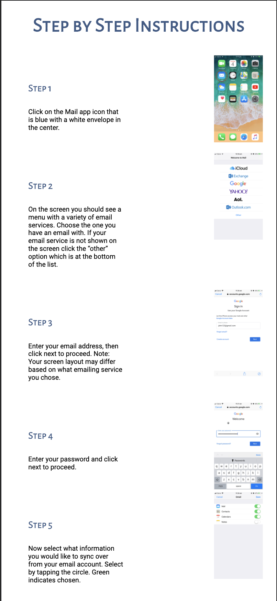
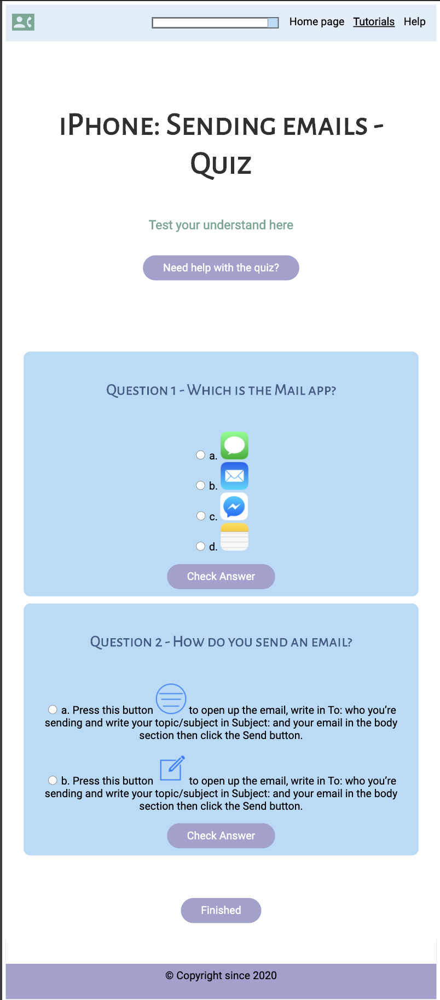
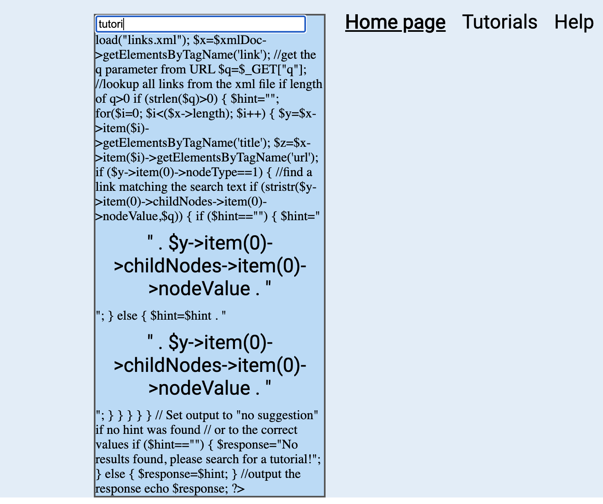

Saucy Onigiri - Stay Connected
Project Progress
Description:
Our project began as a continuation of a previously developed idea, being a website service with the project name Stay Connected that will provide critical information to those who need it most in the webspace, the elderly. The information provided was planned to be purely focused on communication tutorials as well as tips and tricks, so that the users will have a firmer understanding of their device and the software involved to communicate to their family and friends in an easy manner.
Our project has not swayed from our original goal as we have planned and progressed in designing and eventually creating these tutorials to be implemented in distinguishable sections in the Stay Connected website, however we have managed to implement additional quality of life features in order to even spread workload and ensure the project contains as much useful features as possible, These features include an interactive chatbot and a responsive search bar.
Stay Connected has managed to progress smoothly due to good leadership and cooperation from members of the group. So far, the main issues we have encountered for our features are the chatbot. There were also other minor issues such as unidentified symbols and letters, but we were able to overcome these problems easily. In relation to the chatbot, we experience consistent issues with the permissions from AWS, the platform we are hosting our website on. We had contacted professionals on frequent occasions, but we still were unable to solve the issue of implementing the chatbot into the AWS server.
The second main issue was coding the pre-quiz. We had experienced difficulty in coding the Extended feature, changing font size. This feature is within the pre-quiz. And due to our lack of experience in coding, we had poured too much into it, and ran out of time to finish other parts of the pre-quiz. Fortunately, we were able to complete the changing font size Extended feature with the help of another professional.
So far we have not run into any dead ends or too much scope creep, it should be mentioned that the search bar feature is not of highest priority so there is a possibility it may be scrapped should time be of a concern.
In terms of workload, we have planned in a way which will allow members to work both in areas that they are comfortable and familiar with while also extending into areas that they may be less familiar with to promote growth and gain experience.
Outcome to Date
Prototype (Mock up):
Homepage
 |
|---|
| Figure: Home Page |
MVF - Intro-Quiz
The user would first be welcomed by a quiz that tailors to their needs regarding the website. It would contain questions such as the type of device needed for communication, preferred font size and language. These questions ensure a suitable website for the user to learn from.
 |
 |
| Figure: Welcome Page | Figure: Pre-Quiz |
MVF - Tutorials
The website will showcase tutorials once the user has completed the pre-quiz. These tutorials will aim to educate the user regarding the different methods one can communicate with their device. It will be presented in a simple and precise format which allows the user to follow a step by step process with ease.
 |
.png) |
|
| Figure: Tutorial Options. This is both applicable to iPhone and Android. | Figure: Tutorial example page part 1 (All on the same page). | Figure: Tutorial example page part 2. |
MVF - Printable Guides
If the videos on the tutorials are still unclear, users are able to print out the step by step processes in their preferred language. This feature appeals to those who prefer to read, rather than follow a video for instructions.
.png) |
|---|
| MVF Figure: Tutorial example page part 3. |
MVF - Post Quizzes
After the user has gone through the tutorials, an additional quiz will be displayed to test their knowledge. This quiz aims to check if the users understood the instructions given in the videos. Once the quiz has been completed, users are able to seek for additional help if they are still unclear.
 |
|---|
| MVF Figure: Post Quiz |
MVF - Help/Chatbot
An AI chatbot designed to assist users of our website with queries. It will be programmed to answer questions and direct users to a specific tutorial they are looking for.
 |
|---|
| MVF Figure: Chatbot |
EVF - Minitutorials
Using the website as a whole could be a new experience for our target users. As They are a part of the older generation, they might not be familiar with certain features of our product. To ensure the learning process is as smooth as possible, mini tutorials of our main features have been created for extra assistance. If the user is unsure on how to complete certain actions, there are help buttons placed around the website. They will be redirected to the mini tutorials once clicked and can browse through the various list of help offered. There will be labelled tabs that clearly state how to accomplish a specific task. How to use a quiz, how to watch a video, how to use printable guides and how to use the chat bot feature will be available. After selecting the question that they are interested in, it will drop down into a list of steps. Everything is presented in a clear and concise manner so that the page does not appear cluttered to the eye.
 |
 |
| Extended Feature Figure: Mini Tutorial | Extended Feature Figure: Mini Tutorial part 2 |
EVF - Search Bar
Our website offers a variety of tutorials and it may be a hassle for the user to go through every single one of them if they only seek a specific one. Through our search bar, users are able to key in a particular tutorial if they already have one in mind. This enables the user to be time efficient as this method eliminates unnecessary steps. The pre-quiz at the start will also be optional to complete as the user is aware of the assistance that they require rather than relying on the website to generate potential tutorials according to their needs.
 |
|---|
| Extended Feature Figure: Search Bar |
EVF - Changing Font Size
After opening up our website, the user will first be welcomed by an intro quiz which will tailor according to their needs. Questions such as the type of device they use, preferredlanguage and font sizes are asked. This enables the team to ensure a suitable website for the user to learn from. Not all users would have the same needs, some will be comfortable with the default settings whereas the rest might prefer a bigger font size to look at.This will help aid those with vision problems as they would not need to zoom in on the page to read. By doing so, everything remains in appropriate proportion such as images and videos.
 |
|---|
| Extended Feature Figure: Changing Font Size example. This was changed from the Pre-Quiz MVF. Above is an example of the font size being changed to Medium. |
Front End
Welcome Pages
 |
||
| Figure: Welcome Page | Figure: Pre-Quiz | Figure: Home Page |
One of the many Tutorials and Post Quizzes
NOTE: We have completed all of the set tutorials and post quizzes for our users. The remaining tutorials of post quizzes can be found in our hosted website
|  | ||
|---|---|---|
| Figure: iPhone Emailing Tutorials Menu | Figure: Tutorial Part 1 - Video | Figure: Tutorial Part 2 - Written Instructions. |
|  | ||
| Figure: Tutorial Part 3 - Optional choices of chatbot, post quiz and printable guides | Figure: Post Quiz Part 1 - Question | Figure: Post Quiz Part 2 - Question and Answer |
 |
 |
|
| Figure: Mini Tutorial Part 1 | Figure: Mini Tutorial Part 2 - Divs that open up and show content | Figure: Search Bar |
What we Have and Haven’t Acheived
In the first week, it was estimated that everyone will complete their features by the 9th Friday 12:30pm of October or Saturday the latest. This prediction was not met due to the members busy schedules and minor and/or problematic issues in coding because of our lack of experience in coding. Fortunately, the MVF’s we managed to complete were the; Video / written tutorials and Post-Quizzes.
The Chatbot MVF was the most challenging part of the project. At the start, we thought this MVF would require the longest and most effort out of all the MVF. Unexpectedly, we found that the chabot would require the least amount of time to create due to the fact that we were able to acquire free templates. This therefore decreased the amount of time needed to work on it and resulted in the chatbot to be likely finished in time. Except, throughout the past couple of weeks the chatbot encountered the most issues. Despite the chatbot being functional, the main problem the chabot had was that we were not able to host and move the chatbot onto our website from it’s original platform. It mostly had unidentified errors and problems with permissions or restrictions. We had also tried to reach out to other professionals in programming, but we were still unable to identify or solve the issues.
Chatbot Justification Screenshots:
| Description | Screenshot |
|---|---|
| Our working test bot on amazon lex interface. Since the bot is not hostable due to accessibility issues beyond our control, functionality is limited in the way that it can be displayed, links are not usable on the test bot interface. | |
| This screenshot on the right shows functional responses and means or recognising input/more than one way conversation. | |
| The image to the right, refers to the errors that prevent us from implementing the bot to another website. We are required to have an access key and were unable to obtain it. Even though we had tried to contact other professionals, we still could not solve the problem. |
Another feature that was not fully complete was the pre-quiz. Only the font size changing EVF was able to function. Due to this feature occupying a lot of time to figure out and create, the other preferences were not made in time. For the remaining preferences within the quiz, a lot of research was put into it and a team member had attempted in making the option of preferred content on the home page. Unfortunately, this was not able to be completed in time. Similarly, changing the languages is out of our capabilities and was too complex, let alone enough time to complete.
The last feature we tried to work on was the Search Bar EVF. The member that was assigned to create it was able to create a functional search bar. The search bar EVF works perfectly fine, but we were unable to to host it on AWS due to the permissions blocking us. The search bar we had created uses AJAX and PHP. AWS does not have PHP by default, but there is an option to include a plugin for PHP. Unfortunately, this also requires permissions that we are unable to access.
Search Bar Justification Screenshots:
| Description | Screenshot |
|---|---|
| If the user enters any text not relevant to the database, a message will be displayed telling the user what is searchable. | |
| When searching for content relevant to the xml file/database, a result will appear and reveal the div with a functional link | |
| When the search bar is empty, results div is hidden | |
| Search Bar Errors on AWS. There is no PHP on AWS, and we are not able to insert a PHP plugin because of the permission constraints. |  |
We did not include the full Translation EVF. This is because we did not have enough time to complete them and due to our lack of experience for coding. It is too complicated for our current capabilities.
Back End
Below includes the back end code for the search bar. It uses PHP and AJAX in order to make the Search bar functional and includes the database of the search bar. The left side is the XML file that contains the database for the search bar. The purpose of the search bar is to search for tutorials if the user has trouble finding them. The code on the right side is a combination of using the database to match with the users input.
Architecture Diagram

This diagram describes how our Chat Bot feature operates. When a user inputs their inquiry, it is sent to the Chat Bot API through the messaging channel. In the Chat Bot API, it parses the message so it is understandable to the bot. Then with the language processor it returns the answer to the Chat Bot API through the messaging channel then to the user.
User Stories for EVFs
EVF: Translation
Tiffany is one of the many users of Stay Connected. She is an Italian woman who is 55 years old and frequently communicates with her family. She had recently moved to Australia, and only knows basic English. Although, due to covid-19 and quarantine arising, she was not able to personally meet her family. Therefore, she had found the Stay Connected website in order to learn how to communicate on FaceTime using her iPhone. As she enters the website, she skips the welcome page tutorial on how to use a quiz. This is because she thinks it is useless. In relation to this, Tiffany believes that she is a smart individual that does not need tutorials due to her confidence and previous knowledge of completing quizzes in the past. She then continues to complete the pre-quiz and decides to choose ‘English’ since she thinks she is proficient enough in the language. Unfortunately, when she starts going through the iPhone Facetime tutorial, she finds it difficult to understand in English. She had realised that she was too overconfident in her english ability. As a result of this, she went back to the home page from the navigation bar. Tiffany had remembered that you are able to do the pre-quiz again by clicking on the pre-quiz button. Afterwards, she had chosen and submitted the Italian language to enable her to understand the instructions more fluently.
EVF: Changing Font Size
Jimbob is a 69 year old man who recently just purchased a new phone, the Samsung Galaxy S10. Since he had an Apple product before, he is unsure on how to use his new phone. Jimbob’s niece opens up the Stay Connected website on her laptop to help teach Jimbob on how to use his new phone. Jimbob is met with the welcome page of Stay Connected but has trouble reading the text on the screen. He puts his face close up to the screen to try his best in reading the quiz tutorial and finds out he can change the font size to solve his reading struggles. He clicks the “finished” button and is led to the pre-quiz page. Jimbob chooses English as his language, then selects the large font size so he can read better and chooses Android as he uses a Samsung Galaxy S10. He clicks “finished” after finishing the quiz and is led to the home page, where Jimbob immediately clicks on the calling tutorials where he is then led to all the calling tutorials for Android. He selects the “How to call through contacts” and starts learning.
EVF: Search Bar
Robert is a 75 year old man who has been recently gifted a brand new iPhone from his grandchildren, who wish to communicate more with him but were previously limited due to his technologically outdated device. He did not know how to call people using his new and improved iPhone. Due to his lack of knowledge, he wanted to follow a tutorial on how to call others. Therefore, he visited the Stay Connected website to learn how to call people. Whenever he uses websites, he often finds it challenging to navigate to different places on the website. This same problem occurred when he tried using the Stay Connected website. He was unable to locate the specific tutorial that he wanted. So he then resorted to using the Search Bar Feature to directly find the tutorial he wanted. Based on the key words he had typed, a list of different options were laid out for him and he was able to find the tutorial he was looking for.
EVF: Mini Tutorials
Timothy is a 73 year old, widower who migrated from Vietnam in the 80’s. Due to the current pandemic, he can no longer visit his family so he would like to use the site to better communicate with them. Timothy decides to go visit a computer cafe and while he’s there, a worker directs him to the StayConnected website. Once he opens the site, he immediately clicks on the ‘Intro Quiz’ and is asked to select his preferred language, font size and device. He chooses the Vietnamese option and a medium font size. He then migrates to the tutorial page and chooses the android tutorial to send messages. Once the page loads, he realises he does not know how to watch the video and control the volume to lower setting because he is in a public setting. He is hesitant to ask a worker at the cafe, since all of them are occupied. He scrolls down a little and sees that there is a link to a ‘mini tutorial’. Timothy clicks on the link in curiosity and is redirected to a page that has instructions how to operate features in the site. He immediately clicks on the ‘video’ tutorial and is taught how to control volume and screen size. He then goes back to the tutorial page and clicks on the video, adjusting the volume to his preferred setting. Timothy begins to learn how to send messages to his family.